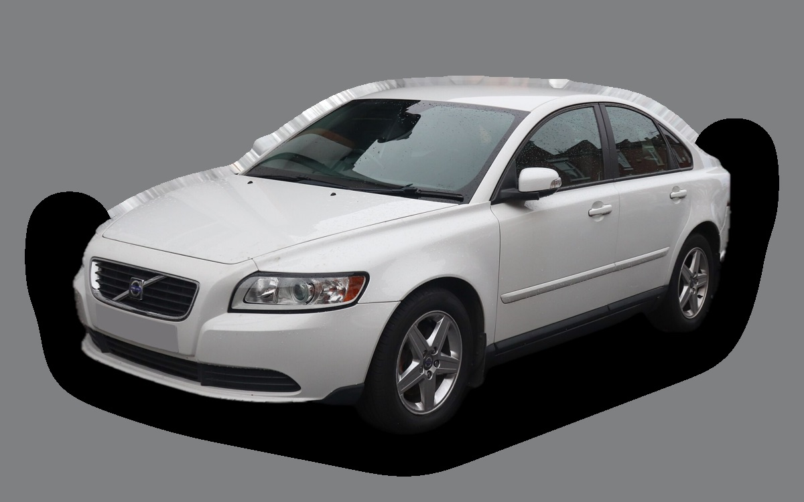
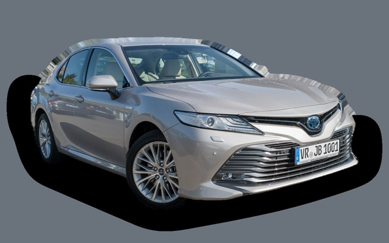

What does a Volvo S40 cost per month?
A 2009 Volvo S40 costs about SEK 3,172 a month, all in.
SEK 3,172per month, 2009 model
SEK 39,000price, 2009 model
SEK 232,900last new price
Evalue grade (2009)


Monthly cost by model year
| Model year | Version in the calculation | Price | Per month | Grade |
|---|---|---|---|---|
| 2012 | 1.8 125, Kinetic | SEK 52,000 | SEK 3,311 | D |
| 2009 | 1.8 125, Kinetic | SEK 39,000 | SEK 3,172 | E |
| 2006 | 1.8 125, Kinetic | SEK 29,000 | SEK 3,033 | D |
Based on 5 years of ownership and 12,500 km a year, with fuel prices from 2026-10-22. The monthly cost includes depreciation, fuel, servicing and repairs, insurance and road tax.
How the cost splits for a 2009 car
- Depreciation: SEK 255/mo
- Fuel: SEK 1,604/mo
- Servicing and repairs: SEK 1,006/mo
- Insurance: SEK 171/mo
- Road tax: SEK 137/mo
Used prices in ads
| Model year | Median price | Ads | Typical mileage |
|---|---|---|---|
| 2012 | SEK 62,400 | 14 | 176,000 km |
| 2011 | SEK 54,000 | 10 | 176,000 km |
| 2010 | SEK 41,700 | 8 | 227,000 km |
| 2009 | SEK 39,800 | 10 | 196,000 km |
| 2008 | SEK 35,500 | 18 | 224,000 km |
| 2007 | SEK 33,400 | 10 | 226,000 km |
| 2006 | SEK 29,500 | 16 | 245,000 km |
| 2005 | SEK 30,000 | 16 | 188,000 km |
The median price in Swedish ads by model year in October 2026 (source: Blocket). Ad prices are asking prices, and the final price may be lower.
Engines and versions
| Engine | Fuel | Power | 0–100 km/h | Consumption (WLTP) | Range | Model years | Extra cost |
|---|---|---|---|---|---|---|---|
| 1.8 125 | Petrol | 125 hp | 10.6 s | 7.3 l/100 km | – | 2005–2012 | – |
| 2.0D 136 | Diesel | 136 hp | 9.7 s | 5.8 l/100 km | – | 2005–2012 | +SEK 15,000 |
| T5 230 | Petrol | 230 hp | 6.8 s | 8.9 l/100 km | – | 2005–2012 | +SEK 49,900 |
- Trim: Kinetic, Summum (+SEK 24,900)
Facts
- Body
- Sedan
- Model years
- 2005–2012
- Last new price
- SEK 232,900
- Boot
- 404 litres
- Euro NCAP
- 5 of 5 stars
- New-car warranty
- 3 years
- Reliability
- 3 of 5
- Comprehensive insurance, estimate
- SEK 5,200/yr
- Servicing, estimate
- SEK 3,700/yr
Common faults to watch for
- Particulate filter and turbo (2.0 diesel), repair about SEK 9,000
- Automatic gearbox (AW55) slips and jerks, repair about SEK 20,000
- Timing belt and tensioners (engine damage if it snaps), repair about SEK 8,000
- Clogged crankcase ventilation (PCV), repair about SEK 6,000
The faults apply to some engines and model years. The calculator works out the risk for the exact version you choose.
Pros and cons
Pro
Cheap, safe sedan that's easy to own.
Con
Tight rear seat and a small boot.
Similar cars
 Tesla Model 3SEK 3,192/mo as a 2023 model
Tesla Model 3SEK 3,192/mo as a 2023 model Polestar 2SEK 3,241/mo as a 2023 model
Polestar 2SEK 3,241/mo as a 2023 model Saab 9-3 Sport SedanSEK 3,482/mo as a 2008 model
Saab 9-3 Sport SedanSEK 3,482/mo as a 2008 model Hyundai Ioniq 6SEK 3,504/mo as a 2023 model
Hyundai Ioniq 6SEK 3,504/mo as a 2023 model Volvo S60 IISEK 3,573/mo as a 2015 model
Volvo S60 IISEK 3,573/mo as a 2015 model
Toyota CamrySEK 2,679/mo as a 2021 model
Updated 2026-10-27 · ad data Oct 2026